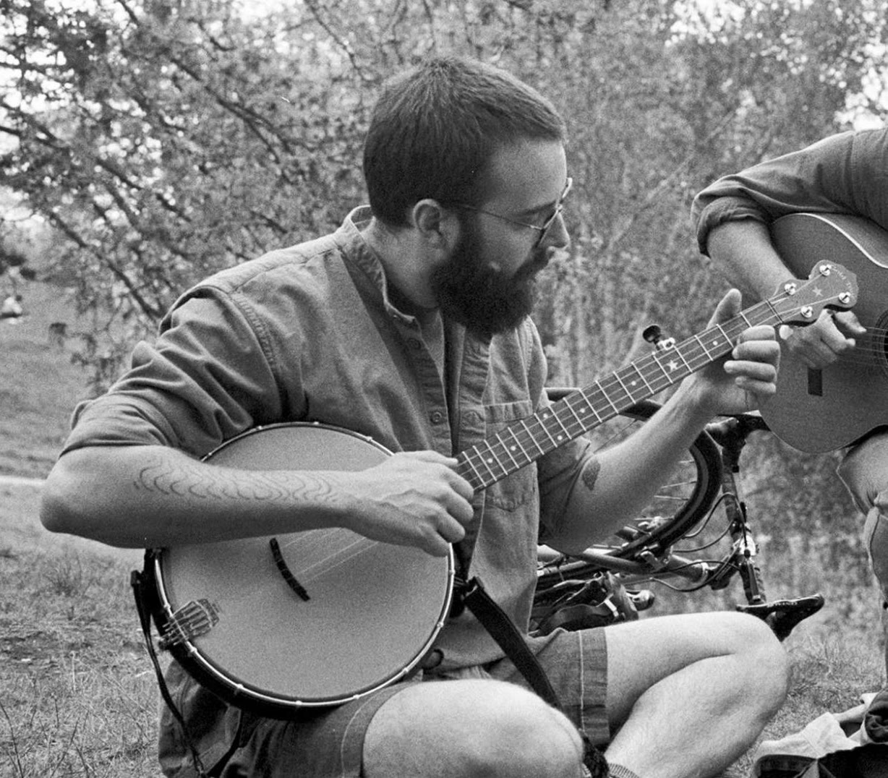

Ben Hayes

I am a research scientist at Sony Computer Science Laboratories in Paris. My recent work is on synthesiser inversion (given a sound, find the parameters that produce it) and on real-time systems for interactive music creation. I like tools that people play with, and I am wary of ones that play instead of them.
I also read and think about what music is and who it is for, and what happens when it becomes something for technology and markets to act on.
I did my doctoral research at Queen Mary University of London’s Centre for Digital Music, supervised by Charalampos Saitis and György Fazekas. Previously, I interned at Spotify, ByteDance and Sony CSL, and led the music team at Jukedeck. I have also worked as a music producer, toured internationally as a musician, and lectured in Electronic & Produced Music at the Guildhall School of Music & Drama.
You can reach me at ben (at) benhayes.net, or find me on GitHub, Google Scholar and LinkedIn.
Publications
2026
- Synth-JEPA: joint embedding prediction for renderer-free synthesizer parameter search Ben Hayes, Haokun Tian, Stefan Lattner Preprint
- Off-manifold robustness in synthesizer inversion with joint distribution flow matching Ben Hayes ISMIR
- LiveBand: live accompaniment generation in the audio domain Marco Pasini, Javier Nistal, Ben Hayes, Mathias Rose Bjare, Stefan Lattner, György Fazekas ISMIR, companion page
2025
- PESTO: real-time pitch estimation with self-supervised transposition-equivariant objective Alain Riou, Bernardo Torres, Ben Hayes, Stefan Lattner, Gaëtan Hadjeres, Gaël Richard, Geoffroy Peeters Transactions of ISMIR, code
- Audio synthesizer inversion in symmetric parameter spaces with approximately equivariant flow matching Ben Hayes, Charalampos Saitis, György Fazekas ISMIR, code
- DiffVox: a differentiable model for capturing and analysing vocal effects distributions Chin-Yun Yu, Marco A. Martínez-Ramírez, Junghyun Koo, Ben Hayes, Wei-Hsiang Liao, György Fazekas, Yuki Mitsufuji DAFx, code
2024
- A review of differentiable digital signal processing for music and speech synthesis Ben Hayes, Jordie Shier, György Fazekas, Andrew McPherson, Charalampos Saitis Frontiers in Signal Processing, web book
2023
- The responsibility problem in neural networks with unordered targets Ben Hayes, Charalampos Saitis, György Fazekas Tiny Papers at ICLR
- Sinusoidal frequency estimation by gradient descent Ben Hayes, Charalampos Saitis, György Fazekas ICASSP, code
- Rigid-body sound synthesis with differentiable modal resonators Rodrigo Diaz, Ben Hayes, Charalampos Saitis, György Fazekas, Mark Sandler ICASSP
2022
- Disembodied timbres: a study on semantically prompted FM synthesis Ben Hayes, Charalampos Saitis, György Fazekas Journal of the Audio Engineering Society, preprint
- timbre.fun: a gamified interactive system for crowdsourcing a timbre semantic vocabulary Ben Hayes, Charalampos Saitis, György Fazekas International Congress on Acoustics
2021
- Neural waveshaping synthesis Ben Hayes, Charalampos Saitis, György Fazekas ISMIR, code, audio examples
- Perceptual and semantic scaling of FM synthesis timbres: common dimensions and the role of expertise Ben Hayes, Charalampos Saitis, György Fazekas ICMPC-ESCOM
2020
- Perceptual similarities in neural timbre embeddings Ben Hayes, Luke Brosnahan, Charalampos Saitis, György Fazekas DMRN+15
- There’s more to timbre than musical instruments: semantic dimensions of FM sounds Ben Hayes, Charalampos Saitis International Conference on Timbre
- Evidence for timbre space robustness to an uncontrolled online stimulus presentation Asterios Zacharakis, Ben Hayes, Charalampos Saitis, Konstantinos Pastiadis International Conference on Timbre